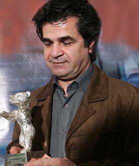

|
|
|
Browsing
Contact Us |
Campaigners |
Face to Face |
Tribune |
Interview |
News |
On the Web |
One Million |
Report
Farsi | Français | German | Italian | Spanish | العربية Also in this section
|
 Iran Sentences Director Jafar Panahi to 6 Years in JailMonday 20 December 2010 View online : Reuters An Iranian court has sentenced acclaimed film director Jafar Panahi to six years in prison and has banned him from making movies or traveling abroad for twenty years, his lawyer was quoted as saying on Monday. Panahi, winner of many international awards and a supporter of opposition leader Mirhossein Mousavi in last year’s disputed presidential election, was arrested in early March. He was kept in detention for 88 days, during which he went on a hunger strike. "Mr. Panahi has been sentenced to six years in jail for acting and propaganda against the system," Isna news agency quoted his lawyer Farideh Gheyrat as saying. "He has also been banned from making films, writing any kind of scripts, traveling abroad and talking to local and foreign media for 20 years," she added, according to Isna’s report. Gheyrat said "the heavy verdict" had been handed to her on Saturday and that she had 20 days to make an appeal. According to a statement released in Italy in November, Panahi had gone on trial in Iran accused of making a film without permission and inciting opposition protests after the 2009 vote that led to months of political turmoil. In his statement to the court, released to Reuters by the organizers of "Giornate degli Autori - Venice Days" — a side event of the Venice film festival — Panahi said he was a victim of injustice and called one of the charges against him "a joke." Panahi said he had started making his latest film when his house was raided and his film collection deemed "obscene" and seized. Panahi was prevented from attending the latest Venice film festival in September. Iranian authorities regularly accuse Western governments and media of conducting propaganda against the Islamic Republic. Panahi won the Camera d’Or prize in Cannes for his 1995 film "The White Balloon" and five years later took the Golden Lion for Best Film at the Venice festival with "The Circle." Director Steven Spielberg and French actress Juliette Binoche have been among the movie luminaries who have spoken up for him. Panahi was initially arrested along with his wife and daughter but his family was later released and he was taken to Tehran’s notorious Evin prison. |